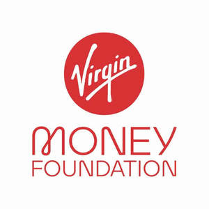

Trade Mark Journal No.2025/011 14 March 2025
UK00004166551 27 February 2025 (9,35,36,38,41)

- Class 9
- Apparatus for recording, transmission or reproduction of sound or images; audio recordings, audio-visual recordings; downloadable audio recordings, downloadable audio-visual recordings; downloadable digital music; podcasts, downloadable podcasts; data processing equipment, computers; computer software and downloadable computer software for the provision of banking services, of financial services, of bank account management services, of monetary transfer services, of payment services, of financial analysis and financial reports, of financial management services, of managing charitable organisations and of information services relating to banking and finance; downloadable mobile applications for use in connection with banking, insurance and financial services, monetary transfer services and managing financial affairs; downloadable software for use in electronically trading, storing, sending, receiving, accepting and transmitting digital currency, and managing digital currency payment and exchange transactions; electronic publications (downloadable); apparatus for use in broadcasting, transmission, receiving, processing, reproducing, encoding and decoding of radio and television programmes, and other audio, video and image data; apparatus for use in broadcasting, transmission, receiving, processing, reproducing, encoding and decoding of digital media content; computer software and telecommunications apparatus to enable connection to databases and the Internet; multifunction cards for financial services; charge cards, cash cards, bank cards, cheque cards, credit cards, debit cards; a database enabling registered charities to process donations and claim gift aid.
- Class 35
- Advertising; business management; business administration; office functions; advertising, promotion, marketing, business management and business consultancy services relating to travel and tourism, media and telecoms, music and entertainment, finance and money, health and wellbeing, leisure and lifestyle, social and environment issues; marketing and promotion services; business consultancy and research; monitoring and evaluation of business and market opportunities; business collaboration and networking services; establishing a network of business contacts (service to assist in-); arranging business introductions; arranging of exhibitions for business purposes; business information provided on-line from a computer database for the Internet; preparation, dissemination and updating of advertising material for use as web pages on the Internet or otherwise; advertising services by means of television screen based text; radio advertising; provision and rental of advertising space; providing online business data information services; business planning, assistance and management services; business investigations and surveys; book-keeping and accounting services; tax assessment preparation, and preparation and completion of tax returns; provision of information relating to tax; tax consultancy and planning services; business consultancy and advisory services; business services relating to the provision of sponsorship; organisation, operation and supervision of loyalty schemes and incentive schemes; promotional and public awareness campaigns; promoting public awareness of environmental issues and initiatives; business services relating to fund raising campaigns; charitable business services; business management and administration services in connection with a charity, non-governmental organization, social enterprise and social organisation; auction sales; charitable donations in-kind, namely co-ordination and procurement of products and services donated as gifts by third parties; payroll services; information and advisory services relating to the aforesaid; information and advisory services relating to the aforesaid services provided on-line from a computer database or the Internet; information and advisory services in relation to the aforesaid services provided over a telecommunications network.
- Class 36
- Insurance; financial affairs; monetary affairs; real estate affairs; fundraising and sponsorship; insurance and life assurance services; travel insurance; car and motor insurance services; financial services; real estate services; valuations and financial appraisals of property; property acquisition and property management services; banking services; acceptance of deposits; safe deposit services; monetary transfer; banking current account services; payment services; automated banking services; automatic cash dispensing services; automatic teller machine services; home banking; internet banking; clearing services; account debiting services; cheque encashment services; administration of financial affairs; trustee services; charitable fund-raising services; mutual funds services; bill payment services; cash management services; factoring services; invoice discounting services; credit brokerage; financing of loans; making of loans against security; mortgage services; lease purchase financing services; hire purchase financing services; financial card services; credit card, charge card, cash card, cheque guarantee card, purchase card, payment card and debit card services; payment and credit services; foreign exchange, money exchange and currency exchange services; travellers cheque services; merchant banking and investment banking services; savings services; investment advice; investment services; financial and investment management services; capital investment services; fund investments; stock broking services; unit trust services; futures contracts; providing stock market information; tax services; financial planning and investment advisory services; financial research services; pension fund services; provision of financial information; administration and valuation of investments; financial analysis and providing reports; financial information services; financial consultancy; financial services relating to sporting, cultural and entertainment projects; arranging of finance for sporting, cultural and entertainment projects; arranging finance for the production of audio, video and image data; arranging finance for the production of digital media content; arranging finance for television programs; arranging finance for films; financial sponsorship; sponsorship and funding of television programmes and films; sponsorship and funding of the production of audio, video and image data; sponsorship and funding of the production of digital media content; sponsorship and funding of live music and sports events; credit services; provision of credit services; financial services relating to the funding of broadcasting; financial services related to the subsidising of broadcasting, television programme, film and digital media content production through on-air advertising, programme sponsorship, the sale of content, merchandising, subscription fees; fund raising; charitable fund raising; organising and management of collections; sponsorship schemes; grant distribution; project-related investments; charitable donations; savings schemes relating to health care; issuance of tokens of value in relation to incentive schemes; issuance of tokens of value; brokerage of carbon credits; providing charitable fundraising, donation giving, community awareness services via a website; information and advisory services relating to the aforesaid; information and advisory services relating to the aforesaid services provided on-line from a computer database or the Internet; information and advisory services in relation to the aforesaid services provided over a telecommunications network.
- Class 38
- Telecommunications; telecommunications services; mobile telecommunications services; telecommunications portal services; Internet portal services; mobile telecommunications network services; wireless network services; fixed line telecommunication services; mobile virtual network operator; provision of broadband telecommunications access; broadband services; broadcasting services; television broadcasting services; radio broadcasting services; broadcasting services relating to Internet protocol TV; provision of access to Internet protocol TV; Internet access services; email and text messaging services; services of a network provider, namely rental and handling of access time to data networks and databases, in particular the Internet; communications services for accessing a database, leasing of access time to a computer database, providing access to computer databases, rental of access time to a computer database; operation of a network, being telecommunication services; telecommunication of information, computer programs, digital media content and any other audio, video or image data; computer aided transmission of messages, audio, video and image data; electronic communication services; television, cable television, satellite television and subscription television broadcasting services; video text and television screen based information and broadcasting and retrieval services; news agency services; texting; sms services; texting services; audio relay services; operating chat rooms; providing online forums; providing online forums for transmission of messages among computer users; information and advisory services relating to the aforesaid; information and advisory services relating to the aforesaid services provided on-line from a computer database or the Internet; information and advisory services in relation to the aforesaid services provided over a telecommunications network.
- Class 41
- Education; providing of training; entertainment; sporting and cultural activities; production, presentation, syndication, reviewing, editing, networking and rental of material with a visual and/or audio element, including television and radio programmes, films, sound and video recordings, interactive entertainment, CDIs, CD-Roms, computer games, live shows, stage plays, exhibitions and concerts; production, presentation, syndication, reviewing, editing, networking and rental of digital media content; electronic games services provided by means of the Internet or any other communications network; education; publication services; information relating to education or entertainment, provided on line from a computer database or the Internet or by means of television or radio programmes; providing on-line electronic publications (not downloadable); publishing of books and other printed matter; publication of electronic books and journals on-line; provision of news information; providing digital music from the Internet (not downloadable); music festival services; organising music festivals; organising of sporting, leisure and entertainment events; organising of sporting, leisure and entertainment events relating to charitable fund raising and promotion; organisation of cultural, entertainment and sporting events for charitable fundraising purposes; educational services relating to environmental conservation and conservations of energy; organisation, conduct and supervision of competitions and lotteries and prize draws; reservation of tickets for shows, cinema, concerts, theatre, festival and sports events; health and fitness club services; exercise and fitness classes; gym club services; provision of swimming pool facilities; personal trainer services; cruise ship entertainment services; holiday camp services; cinema facilities; education services relating to travel and tourism, media and telecoms, music and entertainment, finance and money, health and wellbeing, leisure and lifestyle, social and environment issues; organising and conducting volunteer programmes and community service projects; information and advisory services relating to the aforesaid; information and advisory services relating to the aforesaid services provided on-line from a computer database or the Internet; information and advisory services in relation to the aforesaid services provided over a telecommunications network.
Virgin Enterprises Limited
Representative: Venner Shipley LLP